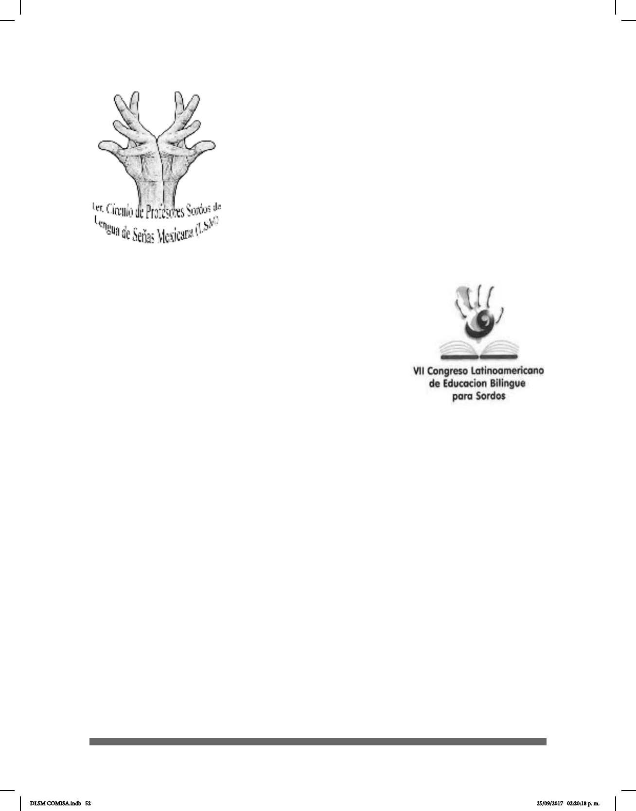

52
Gallaudet, Washington, D.C., Estados Unidos.
En 2014 se elaboró un diccionario electrónico e interactivo de
LSM Wikisigns, Diccionario Colaborativo de LSM.
Y en 2014 Noemí Galicia Rojas, abogada sorda, presentó
el Glosario de Términos Jurídicos en Lengua de Señas
Mexicana (LSM) en el cual se dedicó al análisis de términos
jurídicos, conceptualizándolos para después “señarlos”
y grabarlos. Noemí Galicia es egresada de la carrera de
Derecho en Universidad Interamericana para el Desarrollo;
con ayuda de su intérprete, María Magdalena Alejo y otras
asociaciones de sordos de la Ciudad de México, alcanzó el objetivo de desarrollar el
Glosario.
En 2015 se realizó el Primer y Segundo Círculo de Instructores
Sordos de la LSM en la Ciudad de México en el INDEPEDI.
Coordinado por el Lic. César Ernesto Escobedo Delgado.
Actualmente, algunos Centros de Atención Múltiple (CAM)
están formados por áreas pedagógicas atendidas por un
equipo de apoyo sicopedagógico y uno de apoyo técnico. El
primer equipo cuenta con maestro de grupo (de educación
inicial o primaria), un instructor de taller escolar y un instructor
de capacitación para el trabajo. El equipo de apoyo técnico
está integrado por sicólogos, trabajadores sociales, maestros de lenguaje, maestras de
apoyo, terapistas físicos y maestros de educación física.
Otra de las instituciones que brinda Asistencia Privada es el Instituto Pedagógico para
Problemas de Lenguaje IAP (IPPLIAP) cuyas funciones iniciaron hace más de 40 años y
el cual atiende a niños y adolescentes con problemas de audición, lenguaje y aprendizaje.
DLSM COMISA.indb 52 25/09/2017 02:20:18 p. m.